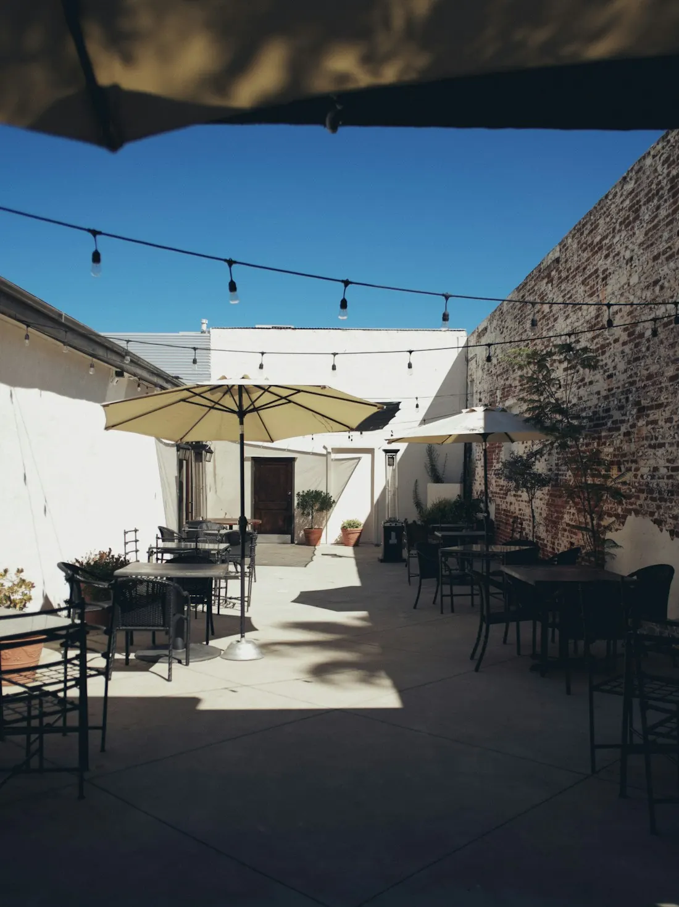
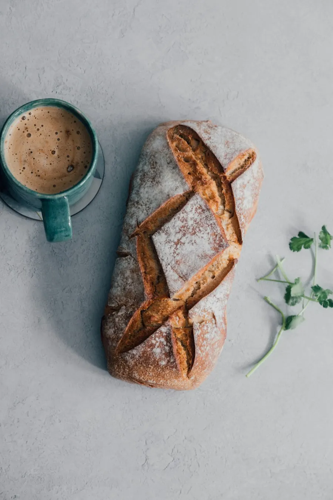
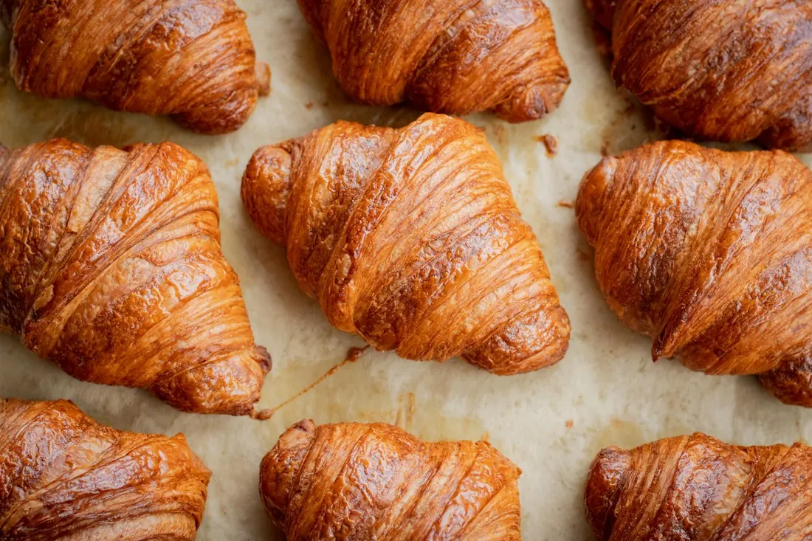
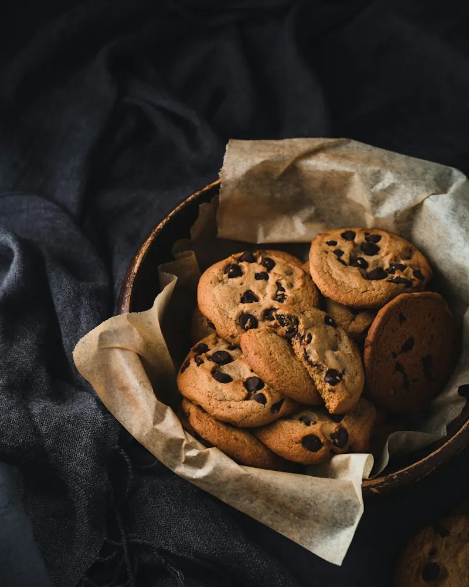
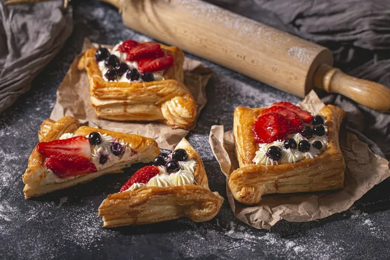
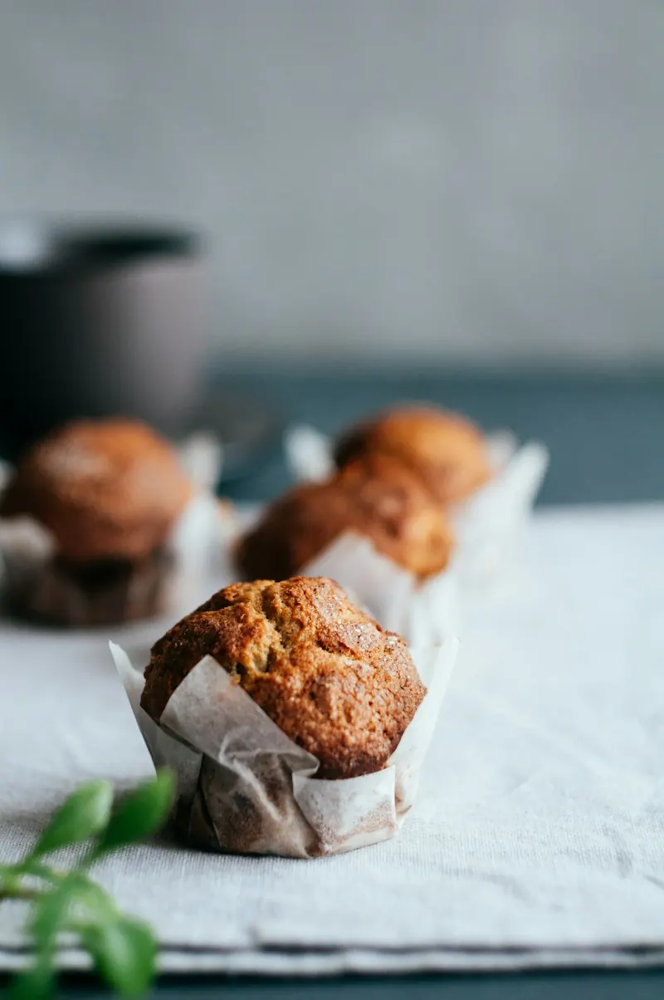

Amor y Café
Café recién hecho y pan del día en La Vega. Una mesa tranquila para empezar la mañana o cerrar la tarde.


Café sin prisa, pan con paciencia
En Amor y Café creemos que las cosas buenas llevan su tiempo. Molemos el café al momento, horneamos en tandas pequeñas cada mañana y preparamos cada taza como si fuera para alguien de la familia.
Somos un rincón tranquilo para el desayuno antes del trabajo, la merienda con amigos o una tarde de lectura. Pasa, pide lo de siempre o déjate sorprender.
Te esperamos con la cafetera encendida.

La especialidad de la casa: el croissant
Mantequilla, harina y paciencia. Lo horneamos temprano y casi nunca llega a la tarde.
- Hojaldrado
Capas finas que crujen al morder y una miga suave por dentro.
- Dorado
Horneado hasta el punto justo, con brillo de mantequilla.
- Del día
Sale del horno cada mañana; cuando se acaba, se acabó.
Recién salido del horno
La vitrina cambia cada día según lo que sale del horno. Escríbenos y te decimos qué hay hoy.



Ven a vernos
Terraza con plantas, bombillos y buena conversación.
La Vega,
República Dominicana